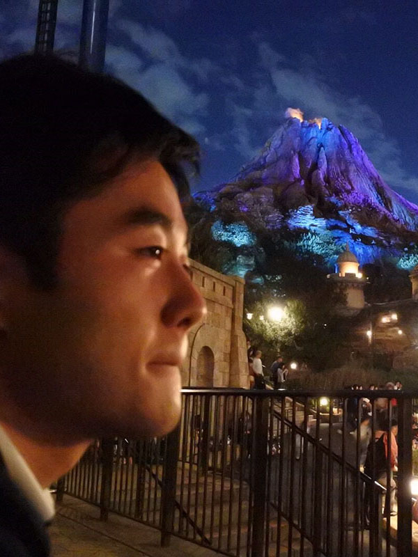

どうも、渡辺 基暉（わたなべ もとき）と申します。
現在、慶應義塾大学 環境情報学部 3年生です。
中西泰人研究室に3年生時から在籍しています。
専攻分野はHuman Computer Interactionや
Augmented Human、Interaction Design
と呼ばれている分野です。
テクノロジーと人間のインタラクション
に関するものを主に勉強、制作しています。
SFCに入ったので大学院は全く考えていなかったのですが、
今の研究室に1年いて、似たような分野に進むのならば
大学院も良いのではないかと悩んでいるところではあります。
就活では主にIT業界の中の
自社でサービスをやっている会社でのエンジニアか
広告系のエンジニアか
どちらかだなと思い、就活中です。
サイトの配色からも見ての通り
青色が好きで、基本青いなにかを身に着けてます。笑
